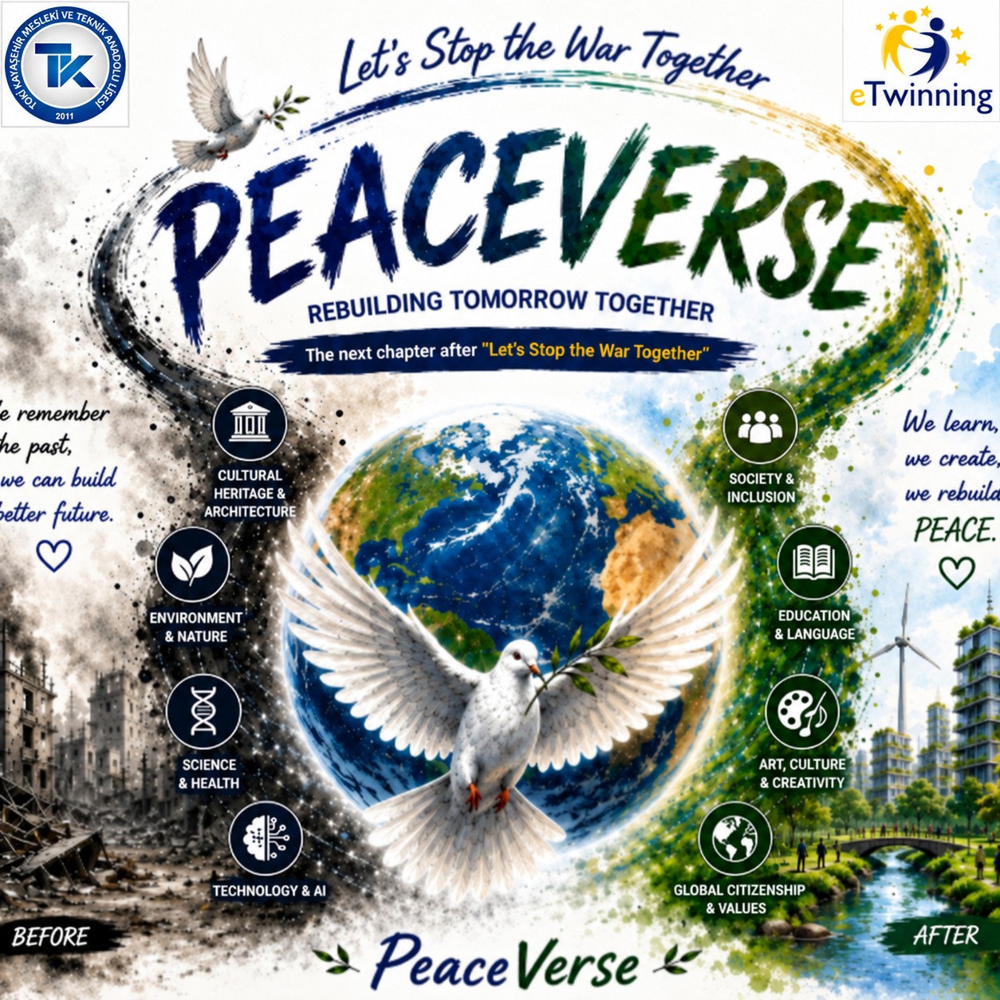

❧
ÖRNEK · 001
Umut / Hope
Tür: doğrulama bekliyor
Konum: envanterde belirlenecek
Dikim tarihi: bilinmiyor
Birlikte bakım, ortak sorumluluk. · PEACEVERSE
PEACEVERSE
Okuldaki mevcut ağaçlara ortak bir hikâye kazandırın. İş birliği, saygılı adlandırma ve birlikte bakım üzerinde çalışın.
Yaşayan atlası keşfet ↗Pilot tasarım · Gerçek ağaç envanteri henüz eklenmedi.
Türünü doğrula, özel adını birlikte seç.
Ahşap isimlik ve QR ile bakım öyküsünü görünür kıl.
Bakım hikâyeleri ve değerlendirmelerle birlikte öğren.
PROJECT GALLERY / PROJE GALERİSİ

Existing artwork is preserved unchanged, including its embedded logos. / Mevcut afişler, içlerindeki logolarla değiştirilmeden kullanıldı.
Bu sayfanın kayıtları ve Padlet kısayolları yalnız PEACEVERSE içindir. Önceki ortak kayıtlar eski sayfada korunur; buraya kopyalanmaz. Önceki ortak kayıtlar
YAŞAYAN ATLAS / LIVING ATLAS
Tür: doğrulama bekliyor
Konum: envanterde belirlenecek
Dikim tarihi: bilinmiyor
Fotoğraf, doğrulanmış tür, ahşap isimlik ve bakım günlüğü burada yer alacak. Gerçek fotoğraf yüklenmedi. QR üretimi, gerçek ağaç kaydı ve paylaşım erişimi netleştikten sonra eklenecek.
KANITA DAYALI / EVIDENCE FIRST
İlk sürümdeki tracker yerel bir prototiptir. Bir haricî tracker'a, sensöre, Padlet'e veya görev Excel'ine bağlı değildir. Girilen veriler yalnız bu tarayıcıda saklanır.
Bu prototip i-Tree modelini çalıştırmaz. Gerçek envanter, doğrulanmış tür, gövde çapı ve uygun yerel iklim/hava kirliliği verileri olmadan ağaç katkısı hesaplanmaz. İstanbul için veri kapsamı ve tür/model geçerliliği henüz doğrulanmadı.
Ağaç dokularındaki mevcut stok. Birimi kg C veya açıkça dönüştürülmüş kg CO₂ olmalı; yıllık tutulumla toplanmaz.
Belirli yılda tutulan miktar; kg C/yıl veya kg CO₂/yıl. Stoktan ayrı, modellenmiş bir tahmindir.
Kirletici bazında kütle/yıl. CO₂ ile aynı gösterge değildir; hava kalitesi ölçümü ya da sağlık sonucu yerine geçmez.
Model tahmini m³/yıl. Yağışın ağaç tarafından yakalanmasıyla aynı değildir; içme suyu tasarrufu olarak gösterilmez.
Bu dört göstergede şu anda sonuç yoktur. Gelecekte kaynak, model sürümü, yer, dönem, birim ve belirsizlik her sonuçla birlikte tutulacak; ölçülmüş saha girdileri ile modellenmiş çıktılar ayrılacak.
KAYITLARINIZI GÖRÜNÜR KILIN
Grafikler yalnız bu tarayıcıya girdiğiniz kayıtları kullanır. Her satır ayrı etkinliktir; toplam ayak izi veya çevresel fayda iddiası değildir.
Referans − gerçek kullanım. Mavi = daha az; turuncu = daha fazla kullanım. Tam su ayak izi değildir.
Miktar × kaynaklı katsayı. Karbon tasarrufu veya ağaç tutumu değildir. Farklı yöntem ve kapsamlar toplanmaz.
Hava kalitesi grafiği henüz yok: kirletici ölçümü bulunmuyor. Eksik veri sıfır değildir.
PROJE BAĞLANTILARI
Mevcut proje panolarını açın veya bahar etkinliği panosunun bağlantısını yerel kaydedin. Bu site gönderi yapmaz, oturum açmaz, Padlet verilerini eşitlemez ve izinleri değiştirmez.
Bunlar önceden doğrulanan Kasım panolarıdır; bahar 2027 ağaç etkinliğinin onaylanmış hedefleri değildir. Erişim Padlet oturumu gerektirebilir.
BAHAR 2027 · ÖNERİLEN AKIŞ
Mevcut ağaçların envanteri, uzmanla tür doğrulama, fotoğraf ve başlangıç gözlemleri. Kesin tarihler henüz belirlenmedi.
Öğrencilerle isim seçimi, ahşap etiket tasarımı, QR bağlantısı. Gövdeye çivi çakmadan bağımsız kazıkla yerleştirme.
İş birliği, kapsayıcılık ve sorumluluk üzerine bakım hikâyeleri ve değerlendirmeler paylaşın. Çevresel kayıtlar isteğe bağlı ve kanıta dayalıdır.
Öğrenci adları, yüzleri ve özel bilgiler yayımlanmaz. Okul izni, doğrulanmış logolar, hedef kitle ve gerçek kayıtlar ayrıca hazırlanacak.